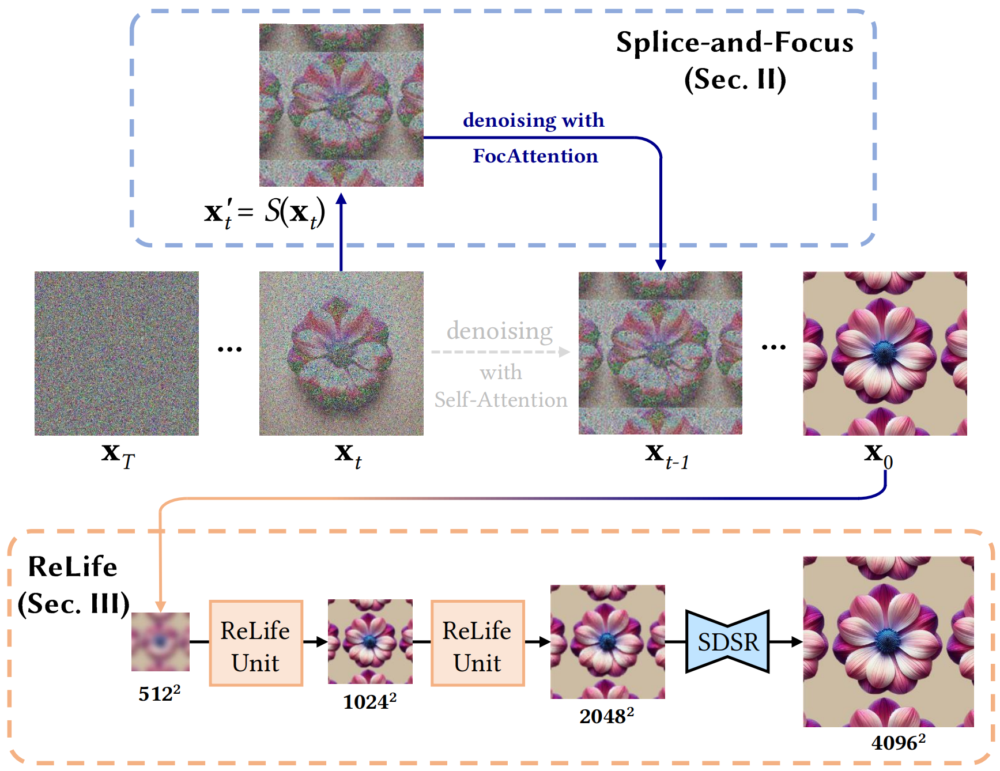

Wangxuan Institute of Computer Technology, Peking University, Beijing, China
Overview
We propose a novel text-driven framework for generating periodic and high-resolution patterns. We introduce a new training-free Splice-and-Focus Mechanism, which enhances the model by constraining latent features and modifying the attention mechanism to produce natural and strictly periodic patterns. Additionally, we present a ReLife Pipeline, which integrates super-resolution and guided image synthesis to enhance pattern resolution while eliminating artifacts and distortions. Our framework produces patterns of superior quality.
Framework

Example Results
"purple flowers, green leaves, white background"
"blue flowers, light blue leaves, white background"
"white flowers, green leaves, blue background"
"yellow small flowers and leaves, blue background"